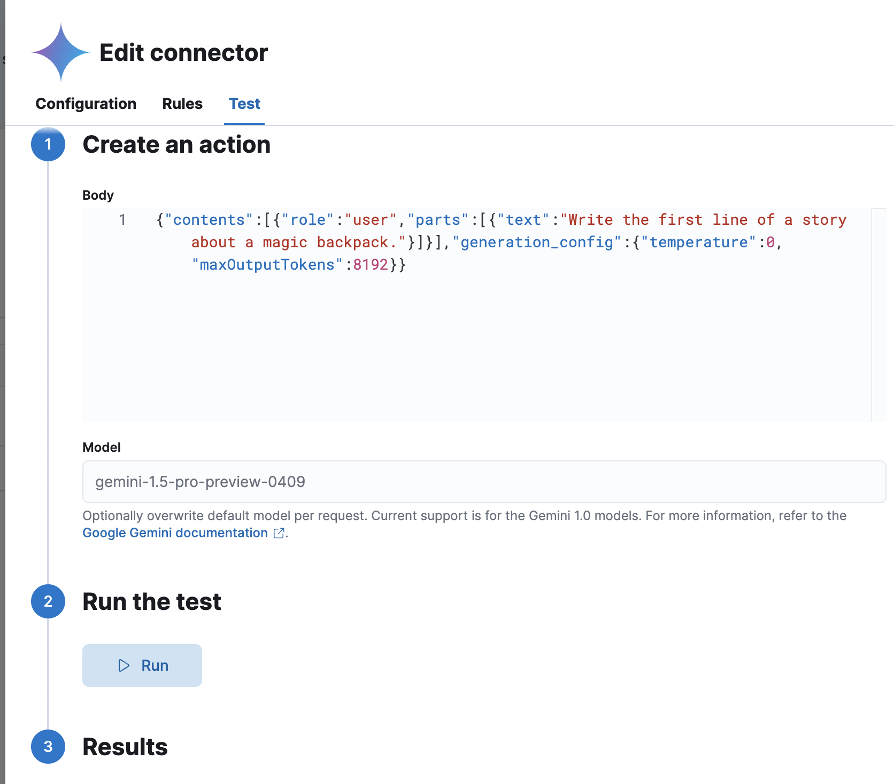

Google Gemini connector and actionedit
The Google Gemini connector uses axios to send a POST request to Google Gemini.
Create connectors in Kibanaedit
You can create connectors in Stack Management > Connectors. For example:

Connector configurationedit
Google Gemini connectors have the following configuration properties:
- Name
- The name of the connector.
- API URL
- The Google Gemini request URL.
- Project ID
- The project which has Vertex AI endpoint enabled.
- Region
- The GCP region where the Vertex AI endpoint enabled.
- Default model
- The GAI model for Google Gemini to use. Current support is for the Google Gemini models, defaulting to gemini-1.5-pro-001. The model can be set on a per request basis by including a "model" parameter alongside the request body.
- Credentials JSON
- The GCP service account JSON file for authentication.
Test connectorsedit
You can test connectors as you’re creating or editing the connector in Kibana. For example:

The Google Gemini actions have the following configuration properties.
- Body
-
A stringified JSON payload sent to the Google Gemini invoke model API. For example:
{ body: JSON.stringify({ contents: [{ role: user, parts: [{ text: 'Hello world!' }] }], generation_config: { temperature: 0, maxOutputTokens: 8192 } }) } - Model
- An optional string that overwrites the connector’s default model.
Connector networking configurationedit
Use the Action configuration settings to customize connector networking configurations, such as proxies, certificates, or TLS settings. You can set configurations that apply to all your connectors or use xpack.actions.customHostSettings to set per-host configurations.